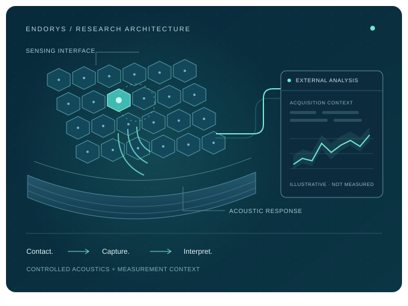

Coupling drift
Air pockets and uneven couplant thickness across curved anatomy distort signal amplitude and reduce repeatability across refits.
Endorys is developing a research architecture for repeatable tissue measurements, bringing controlled acoustics, sensing geometry and acquisition conditions into one framework.
Pre-prototype research · Physical validation planned · Patent Pending (IN 202641134091)

Air pockets and uneven couplant thickness across curved anatomy distort signal amplitude and reduce repeatability across refits.
Flexible arrays deform when placed against curved surfaces, shifting element coordinates and corrupting time-of-flight reconstruction.
Conventional acquisition pipelines reconstruct poorly coupled or geometrically ambiguous paths alongside valid waveforms.
A proposed conformal sensing interface that accounts for contact quality, assisted coupling and sensor geometry.
Sequential acoustic excitation and response capture, supported by path qualification and traceable acquisition metadata.
Signal analysis and sound-speed reconstruction research, with explicit calibration requirements and uncertainty bounds.
The Acoustic Reference Test (E001) is designed to establish a reproducible, non-biological acoustic reference before evaluating the proposed sensing interface. The protocol and synthetic analysis examples are available for independent review.
Patent Pending · Indian Patent Application No. 202641134091 (Filed Nov 2026)
Review the evidence & roadmapPhysical validation has not yet been demonstrated.
We invite ultrasound researchers, acoustic metrology labs, and phantom testing partners in Bengaluru and beyond to review Protocol E001, coupling controls, and geometry uncertainty criteria.